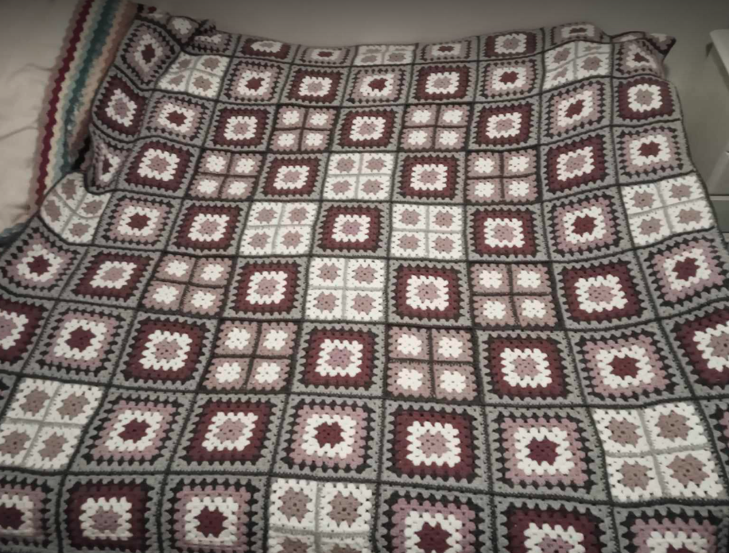
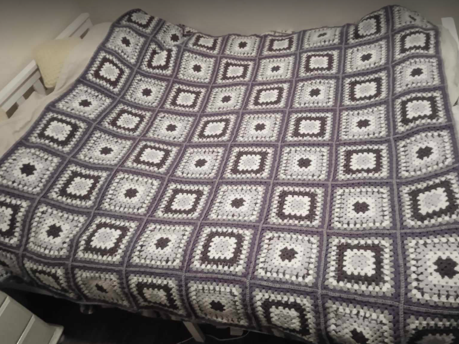
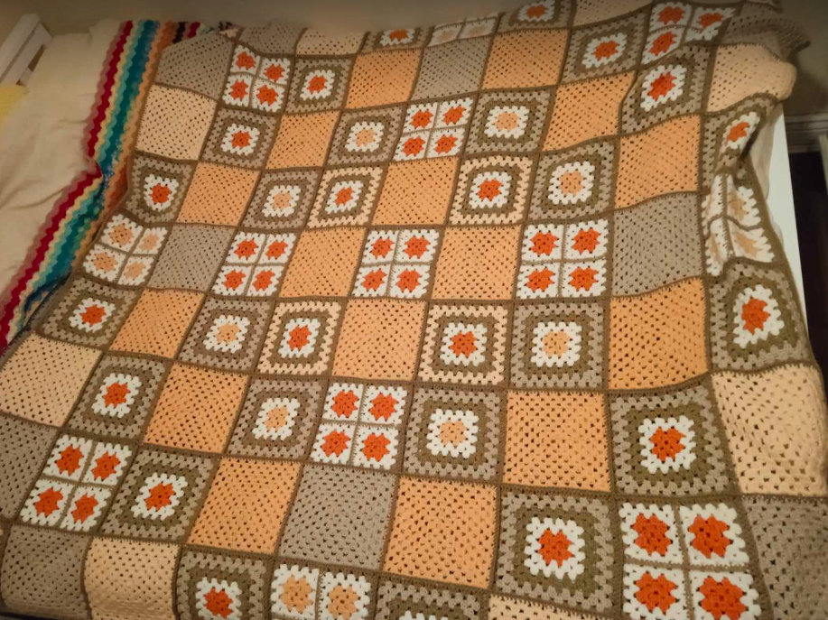
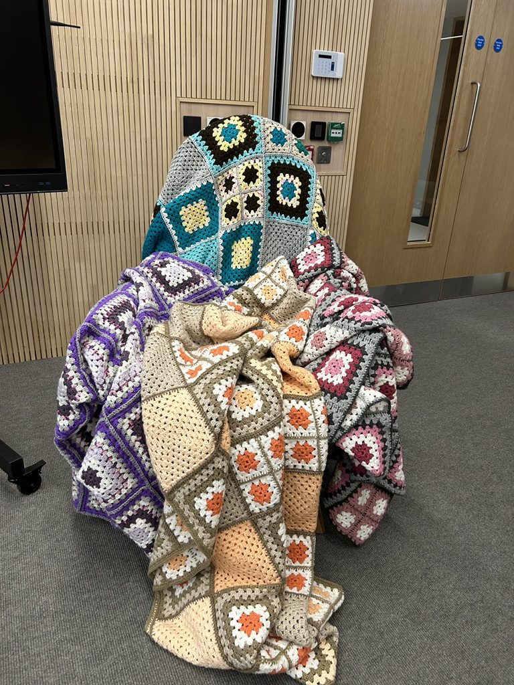

ONLINE GUIDE
Beyond Boundaries: Art Unleashed
Event Details
Date: 4th December 2023
Time: 5:00PM - 7:00PM
Location
An Meitheal,Trinity disAbility Hub,
Printing House Square,
Trinity College Dublin,
Dublin D02 DP29.
You can find Printing House Square by watching the How to get to Printing House Square video.
If you wish to view the Beyond Boundaries: Art Unleashed Exhibition in person, please email abilitycoop@gmail.com or askds@tcd.ie for further details.
Beyond Boundaries:
Art Unleashed
Art transcends boundaries and speaks a universal language understood by all. It's a powerful tool that connects diverse communities, celebrates unique perspectives, and embraces inclusivity. We believe art should be accessible to everyone, regardless of background, ability, or circumstance. It's not just about viewing art; it's about experiencing it, creating it, and being part of a community that values every voice.
How to use the Online Guide
Use the 'Numbered' Scrolling Bar on left to navigate up and down the Online Guide or by clicking on one of the numbers.
If you are using a mobile or smart phone device, you can just scroll down through the online guide to view the exhibition submissions.
Beyond Boundaries: Art Unleashed
The Trinity Ability co_op, TCD Student Union, and the Douglas Hyde Gallery are excited to present the Beyond Boundares: Art Unleashed Art Exhibition 2023.
This exhibition contains work from disabled Trinity students and staff (diagnosed or self-identifying).
THE BACKGROUND
This is the third year of Trinity's Disability Art Exhibition.
The Trinity Provost & President Dr Linda Doyle will offically open the Beyond Boundaries: Art Unleashed Exhibition, on Monday 4th December at 5:30PM, in An Meitheal, Trinity disAbility Hub, Printing House Square.
In 2022 the exhibition took place in An Meitheal, Printing House Square with the theme “UNIQUE: A Disabled Perspective”.
In 2021 the exhibition took place in the Hamilton Zóin Mac Leinn with the theme “Defining Disability”.
This year's exhibition is a collaboration between the Trinity Ability co_op, the Douglas Hyde Gallery, and the Trinity College Dublin Student's Union (TCDSU).
A huge thank you to the Trinity disAbility Service, and Declan Treanor - disAbility Service Director, for their help and support with the exhibition.
Our sincerest thanks to the artists and poets who have submitted their extraordinary work!
THE PEOPLE
HEAD OF THE BEYOND BOUNDARIES COMMITTEE
Ciara McGeough (She/Her), Disability Service Graduate Intern 2023/24
BEYOND BOUNDARIES COMMITTEE
- Amy
- Ben Rowsome
- Emma
- Mark Likeman (he/him)
TCD STUDENT UNION REP
Keely Jenkinson (She/Her).
Thank you Keely and TCD Student's Union for all your help and
support!
ACKNOWLEDGEMENTS
Fernando Sánchez-Migallón cano from the Douglas Hyde Gallery.
We are grateful to both Fernando and the
Douglas Hyde Gallery
for all their support, help and assitance.

List of Artwork & Poetry Submissions
Declan Treanor - AI New Yorker Covers
Enemies ~ Faolán Doecke Launders
A SHOW ~ Alex Martin
That I Must Climb ~ Faolán Doecke Launders
This Land I Love - Ireland on a Stamp 2 Visa ~ Emily Ryan
The Gatekeeper ~ by Faolán Doecke Launders
Access to my Community ~ by Gillian Cronin
Art by Shadia Repon
Rhys Merriman
Yellow Folder - Amy O'Keeffe
Equality ~ Conor Quinn
Ben Rowsome ~ Poems and Sonnet
Personal Things ~ by Kathleen O'Leary
Robert Walsh Garcia Right to Travel
Poem ~ by SAB
16 Contrast Lab Coat ~ Designed by Mark Likeman
17 Handcrafted Blankets - Made by Heather McClean
18 Crochet Fidgets - Made by Heather McClean
#1 AI New Yorker ~ Declan Treanor
DESCRIPTION "Sorry for my late reply": The cover features a figure in a top hat reclining on a chaise lounge, a thought bubble with the words "Sorry for my late reply" above their head. The surroundings are surreal, with a swirling vortex on the left and floating, disjoined checkerboard patterns. This image is interpreted as representing the inner experience of someone with ADHD, where time management and the ability to respond promptly can be a challenge. The swirling vortex may symbolise the whirlwind of thoughts and distractions that can lead to procrastination or delayed responses. The checkerboard elements, defying gravity and order, represents the non-linear thinking and difficulty in maintaining task structure that individuals with ADHD often experience. The discarded tissues indicates past efforts or attempts to address issues that haven't quite succeeded, adding to the sense of chaos and disarray. The overall composition conveys a sense of waiting, contemplation, and the disjointed passage of time.

DESCRIPTION "Artificial Intelligence": The cover portrays a caricatured hand holding a bottle labeled "Artificial Intelligence" which is being poured over a computer that appears overwhelmed or malfunctioning, with its contents spilling out uncontrollably. This could be seen as a metaphor for the experience of a person with ADHD, where the AI symbolises a flood of information or stimuli. Just as the computer is unable to contain the influx from the bottle, an individual with ADHD might feel similarly inundated by sensory input or rapid thoughts, struggling to filter and process them effectively. The scattered components and the unplugged cable might represent the challenges of organising tasks and staying connected to a single activity or thought process. The "J'accuse!" speech bubble implies an accusation or calling out, possibly alluding to the critical discourse on the impact of AI or to the inner criticism that individuals with ADHD might confront when managing their symptoms.

DESCRIPTION "1000 Prompts": The cover depicts a figure balancing on a seesaw, weighed down on one side by a heavy bag labeled "1000 Prompts." The figure's head is made up of a stack of three doughnut-like shapes with holes, through which paint is being poured, and it holds a palette and brushes. There's an all-seeing eye in the top left corner, and the figure is saying, "J'accuse!"—a phrase famously associated with Emile Zola, meaning "I accuse!" If we consider this image in the context of a person with ADHD, it is interpreted as representing the overload of ideas and the challenge of maintaining balance with such a condition. The "1000 Prompts" could symbolise the myriad of thoughts, tasks, and stimuli that a person with ADHD might be trying to manage at once, making it hard to find equilibrium. The doughnut shapes as the head represents the feeling of having a mind full of holes where thoughts and ideas might get lost or escape, and the act of painting could suggest the creative potential that can come from such a flood of ideas. The phrase "J'accuse!" might be the figure's declaration against the overwhelming and often judgmental scrutiny they feel, perhaps from society or their own internal critic, regarding their way of processing and expressing thoughts.

AI New Yorker Covers ~ Declan Treanor
Create your own New Yorker cover with TILL-E as part of the New Yorker Magazine The A.I.Issue.
#2 Enemies (2022) ~ by Faolán Doecke Launders
Do you persevere, or have these struggles defeated you.
Do you envision, or have these delusions misguided you.
Why do you seek something external to yourself,
Are you too concerned with what was and what will be.
If I pushed you down that cliff, would you be able to climb
again.
If I let you through this gate, would you be able to dream
again.
Or would you become hollow.
Obstacle advances Action,
Ambition advances Conscience,
What are you if not consciously acting.
Once you pass this gate, there will only be the untrodden,
Each step will make a mark, on you, as much as where you walk.
I cannot give you freedom, for you must take it with your own
hands.
Beyond this gate, none will oppose you,
Because you have no enemies
No one does.
#3 A SHOW ~ by Alex Martin
A day of fear is here my face white as a ghost.
She smiles at me, and she takes my hand, as she brings me to my
seat.
I would love to have friends of my own,
but I only have my family,
there's something about me that this classroom doesn't see,
A happy loving guy just watching life go by, but is he
actually,
or is he just putting it on for show?
look at me what do you see!
I might do things at a slower pace,
but life isn't always a race.
The struggles been real,
but I just had to deal.
Secondary school wasn't great because I never had a mate.
But a new chapter begins.
I'll keep fighting and hope to see.
That all people with disabilities will get opportunities like
me.
I count myself lucky to be one of the few that get to go to
Trinity.
About 'A SHOW' by Alex Martin
This poem show's people what I want through and to show people things must change for the disability community. So, they can achieve what they want to achieve.
#4 That I Must Climb (2022) ~ by Faolán Doecke Launders
Steep, cracked, and jagged, it stands,
Taller than the clouds, wider than the seas.
The night sky looms overhead, yet there are no stars,
While dark and grey clouds slip down its rough edges.
The only light peeks from within the cracks along its face,
As if trying to reach out its arms to me.
All I know is that I must climb.
Even if I lose grip and slip,
Even if debris comes crashing down,
Even if my hands bruise, my bones crack, my arms tear,
I must keep my hold.
...that I must climb.
So please wait a little longer for me, okay?
I just have to climb some more.
#5 This Land I Love - Ireland on a Stamp 2 Visa ~ Emily Ryan
Note: This will be displayed on a computer screen as a video during the exhibition.


Photo ALT Descriptions:
Photo #1
A view of the sea with a rainbow in the distance, a solitary
(tourist) telescope in the foreground, under a cloudy sky.
Photo #2
Silhouette of a female and a dog walking together on a grassy
path with a bright sky in the background.
Photo #3
Sunlit pathway leading to a cemetery with a prominent Celtic
cross monument under a cloudy sky.
Photo #4
A stop sign by a country road with a view of the overcast
landscape in the background.
Photo #5
Coastal path along a cliff with overcast skies above the sea.
Photo #6
Dusk over a coastal town with dramatic clouds reflected in the
calm sea.
Photo #7
Sun rays peeking through clouds over a serene sea next to a
rocky shoreline.
Photo #8
Sunset over a calm bay with rocky edges and a distant view of a
coastal town.
Photo #9
Ornate metal arch of a Halfpenny bridge with a ribbon attached,
set against a clear blue sky.
Photo #10
View from a window showing a rainbow over a city street with
parked cars and buildings, after rain.
Photo #11
Twilight sky over the historical architecture of Trinity College
Dublin with students and visitors in the foreground.
There is no video transcript or captions, or music in this video. The video is a collage of photographs.
#6 The Gatekeeper (2019) ~ by Faolán Doecke Launders
A place of hope, a place of dreams, Lies behind the
gateway.
Guarded by him, He who stands at the edge of the abyss.
The one which we all climb from.
Upon reaching the gate, I first saw him.
While others passed the gate, I was stopped,
By him.
His body devours light, Only his bleak outline can be seen.
His lifeless eyes fixated on you, With a sword in his hand.
He guards the gateway.
When I try to pass, He shoves me back.
When I try to run, He hunts me down.
When I try to fight, He strikes me last.
He lets all others pass him, He is only focused on me.
He knows my every move, No matter what I try.
I asked him his name once, Grinning with razor teeth,
He looks me in the eye, Pulls off his cloak,
Revealing his face to me.
It was at that moment, That I understood.
For the face that I saw, Was my very own.
Then I remembered,
Told to me by my kin.
Our only true enemy,
Is the one within.
#7 Access to my Community ~ by Gillian Cronin
Having access to my community,
For a person with a disability,
Means I can participate to the best of my ability.
Recently I discovered Crann,
A place where I can go for a chat,
Over a cup of tea or coffee,
And some sweet snacks.
Crann designed Ireland's first fully accessible playground &
leisure area,
For people with Neuro-physical disabilities,
As they saw the world needed to open more opportunities,
To allow us to come together as one in our communities.
Before I began my time in Trinity,
I applied for a job in my local community.
It was in a café that employs people with intellectual
disabilities,
but I was told I would not be employed,
as I did not fit their description of a person with a
disability.
So, my journey from Cork to Dublin was meant to be,
As there was no suitable 3rd level education for me.
I didn't think I passed my interview,
As at this point, I was totally lost in my capabilities.
The Trinity panel saw something in me,
Now I am part of their community.
As time goes on,
I began to see,
That I can do whatever I want,
With some readjustments,
I will succeed.
#8 Art by Shadia Repon
Replica of 'Peaceful Reflections' by Bob Ross - Shadia Repon
ALT Description: Canvas painting depicting a mountain next to a lake with trees under a sunset sky.
Replica of 'Towering Peaks' by Bob Ross - Shadia Repon
ALT Description: Painting of a river flowing through a meadow with pine trees and snow-capped mountains in the background.
Replica of 'Artic Beauty' by Bob Ross - Shadia Repon
ALT Description: Oil painting of snowy mountains behind a dark forest under a blue sky.
Water Lilies - Shadia Repon
ALT Description: Watercolor painting of pink lotus flowers with green lily pads on water.

#9 People in wheelchairs have the right to be equal and live like other people ~ by Rhys Merriman

Rhys Merriman
People with disabilities have their rights affected everyday. For instance People in wheelchairs might not have access to shops, transportation and schools. Most public transport only has space for one wheelchair on it. People who travel on planes for a holiday will have to organise for someone to meet them at the end of their flight to help them off the plane. Sometimes there are extreme delays and they can be left sitting on the plane for an hour. People in wheelchairs have the right to live their lives as normal as possible. They should not have obstacles in their way.
I try to translate the people in wheelchairs of trying to know how they can live like other people and how they can overcome any sorts of obstacles that get in their way even knowing how they can handle any sort of situations that they get into and how they can cope with it.
#10 Yellow Folder - Amy O'Keeffe
Collage featuring a torn photograph of a person's face, overlaid with handwritten messages about chronic illness and societal perceptions.

#11 EQUALITY ~ by Conor Quinn

Equality Collage Poster ~ by Conor Quinn (Plain text version)
Top Centre Photo
A group of six people. Three on the left appear to have no physical disabilities. Three on the right have a physical disability; person with a prosthetic leg, person in a wheelchair, person on crutches with one leg. They are standing on a platform, which is balanced on a pyramid shape, with a susnset background with sun rays around the group of people.
Top left of Photo
There is a photo a male individial in a wheelchair opening an exit door.
Text reads: Access to the same support,
facilities and instructors.
Top right of Photo
There is a cartoon or illustration of eight people with their arms pointed to a large hand above their heads. One of them is in a wheelchair. One is being picked up and lifted into the air by the large hand.
Text reads: Access to the same support,
facilities and instructors.
Centre Photo (text)
Text reads: Equality includes a right to
education.
Bottom left of Photo
There appears to be a patch shaped into the words 'Everyone is valued' with two figures with raised arms.
Text reads: Everyone is valued.
Bottom right of Photo
An image of the Scales of Justice.
Text reads: Support by the Government
for human rights and access
to education.

Equality ~ by Conor Quinn (Plain text version)
In my poster I tried to write about the Equality
rights.
Because Every people deserved to be equal
#12 Poems and Sonnet ~ by Ben Rowsome
Within ~ by Ben Rowsome
Memories with no sound,
But just fleeting images
Blurred by bitterness and lockdown,
Begin to clog up the drain of my brain,
Whose waterlogged streets swerve
And serve as a pool of regrets.
Friends with no faces,
But just acts of sentiment
That ripple through a lifetime,
All run for office in my lawless heart,
Whose navigation systems crashed
A long pandemic ago.
Tears with no reason,
But just silver discharge
From the soul's invisible cyst,
Alight on the poet's warm cheeks,
Whose tension makes them solid rocks
In the wake of raw anxiety.
Sonnet ~ by Ben Rowsome
Your name is but a whisper in the storm—
Your favourite things, these paternoster lakes
Obscured by hills of Himalayan form,
Their peaks topped with citadels of snowflakes.
Your blonde hair, remnants of a desert sun
To which our great ancestors once succumbed—
Your blue eyes, brazen as a sea demon
With bright venom that has my conscience numbed.
Your skin, a holy reservoir of light—
This ceaseless night, a stadium of dreams—
Your face skimming cesspools of time - its slight
Solemnity diverges at the seams.
Your voice is an empire of mandolins
That marches through the mire of all my sins.
Recalling the Dark Summer of '21 ~ by Ben Rowsome
I have lived through god-awful times
When my own anxiety seeks asylum
From the rest of the body, and others' crimes
That I've been convinced are my problem
Are a deadweight through this pandemic.
All my primary signals are jammed
(Now I can't even study without getting sick),
And all bloody week my nerves are slammed—
Swelling to the size of lurid leaches
Before the semester is even out,
And sucking the summer out of beaches
To pour in a thick sense of doubt.
Time is a sinkhole, belching deaths
In macabre demographics and newsflashes,
Fed through the fear of shorter breaths
And the death notes my ego cashes.
I have lived through god-awful times
When my own sordid premonitions come forward
And drag me through a forest of chimes
That whisper this through the floorboards;
“You have nothing left to give now—
Your creel is empty, no dreams to scale.
All there is left to do is breathlessly bow
To the Wraiths who Eternally Inhale!”
#13 Personal Things ~ Kathleen (Kate) O'Leary


About by Kathleen O'Leary
Kathleen O' Leary, a wheelchair user from West Cork studied in Maynooth University and became a teacher for 28 years in Maynooth Post-Primary School. Kathleen wrote this poem for her husband.
Personal Things ~ by Kathleen O'Leary (Plain text version)
He carries my personal things in his pocket-
A lipstick, a mirror, my comb;
Reflecting the ease of a long shared communion
Often wordless but echoed in song;
We lit the same tune through our lifetime
Celebrating the years that have flown-
He carries my personal things in his pocket
But his heart's where my dreams have come
home
#14 Robert Walsh Garcia Right to Travel
Informational poster on a wall with text, images, and a QR code, discussing the 'Right to Travel' by Robert Walsh Garcia.

YouTube Video - Robert Walsh Garcia Right to Travel
From the QR code for 'See my video. Hear my story.'
Note: Captions can be enabled in the video player settings.
Robert Walsh Garcia Right to Travel - Video Transcript
Click the tab or down arrow to read the video transcript.
0:31 - Mom Anna my sister Shiva my grandparents
0:35 - Nella and Quakin my aunties and my
0:30 - Uncles and my
0:40 - Cousins and then there's Nelly my half
0:43 - Spanish half Irish
0:45 - Dog they all live in Ciudad Real which is
0:48 - An hour or two from
0:55 - Madrid it's so important for me to see
0:58 - My family in Spain
1:01 - My grandparents are old and might not
1:30 - Have much
1:05 - Time I need as much time as possible
1:08 - With them while they are still with
1:12 - Us I want to have good memories of them
1:17 - I care for them they are precious to me
1:21 - I miss them I can say the same about my
1:25 - Mom and my sister I know my mom is
1:29 - Lonely with
1:30 - Me that's natural for any human being
1:34 - That's not easy for me
1:41 - Either the thing is I have chosen to
1:44 - Live in Ireland with my
1:46 - Dad here I can
1:48 - Study I can get a decent job in Spain
1:53 - Young people have less work it's harder
1:56 - For people to live independently when
1:50 - They have a
2:00 - Disability so I am like any other person
2:04 - In Ireland looking for work and
2:08 - Opportunities I'm lucky I also have
2:11 - Family in
2:12 - Ireland sometimes the choices that I
2:15 - Have to make gives me a pain in my
2:22 - Heart so here's the problem when I want
2:26 - To go to Spain I have to tell the DSP
2:29 - About going to visit my
2:32 - Family they say they need to know how
2:35 - Many days I spend with
2:37 - Them I am only allowed two weeks in the
2:41 - Year to
2:42 - Visit after that they stop my money then
2:46 - They send me lots of letters saying that
2:49 - I must inform them and how long I am
2:52 - Gone and send proof and keep on saying I
2:56 - Only have two
2:58 - Weeks
3:02 - That all makes me frustrated because I
3:05 - Don't get enough time to see my family
3:07 - In
3:08 - Spain it makes me feel like I should
3:12 - Go it's such a hassle with the two Week
3:16 - Rule and all the
3:18 - Letters me and my family is my own
3:22 - Business whenever I see a brown L with
3:25 - The harp on it I get
3:28 - Nervous
3:30 - You don't know what they will be
3:32 - Saying will they be cutting me off again
3:36 - Or saying I have you used up all my time
3:40 - With my precious
3:42 - Family I know that PE people with
3:46 - Disabilities in some countries can't get
3:48 - A
3:49 - Passport they can't leave their country
3:52 - When their family are someplace else
3:56 - Compared to them I am lucky
4:00 - I have the right to move about I can
4:03 - Choose where I live I have the right to
4:06 - Be both Irish and
4:08 - Spanish but it's not the same for me as
4:11 - For other people who have all their
4:14 - Family here in
4:16 - Ireland my money is taken away from me if
4:19 - I go to see my family in Spain for
4:22 - Longer than 2 weeks if you work for the
4:25 - DSP you can have lots of holidays you
4:29 - Can do what you want with your
4:34 - Time Family Means time together family
4:38 - Means good memories family means
4:41 - Laughing and fun times family means
4:44 - Cooking and eating together family means
4:47 - Taking care of each other family means
4:51 - Celebrating we love to party together as
4:54 - A family in Spain family means going on
4:57 - Trips together family means means doing
5:00 - Ordinary things together like going to
5:02 - The
5:03 - Shops I miss them family for us in Spain
5:07 - Means watching the news lots of Crisis
5:11 - Shouting at the television giving out to
5:14 - The president and the
5:17 - Politics two weeks in a whole year is
5:21 - Just too
5:25 - Short this is what I what going home is
5:29 - Like for
5:30 - Me when I go online to buy my ticket to
5:34 - Go to Spain I am
5:37 - Excited when I press the buy ticket
5:41 - Button I am nervous excited then just
5:45 - Real
5:46 - Joy then I call my mom to tell her when
5:49 - I'll be coming down I always tell her
5:33 - Not to tell my grandparents so I can
5:55 - Give them a
5:57 - Surprise so then I wait and look at the
6:01 - Days left before I go home the time
6:05 - Always goes very fast when I'm waiting
6:09 - When I leave home in Ireland I am
6:12 - Nervous that I am leaving my other
6:14 - Family here but I know I'll be coming
6:17 - Back soon once I'm at the airport I call
6:21 - Or text my mom saying that it's very
6:25 - Little time before we meet that makes me
6:29 - More
6:31 - Excited I think it makes her feel like
6:34 - She's going to cry she has been waiting
6:37 - For so
6:39 - Long when I get off the plane I text my
6:43 - Mom saying I have landed safely in
6:46 - Madrid I wonder if she is picking me up
6:50 - At the airport then she is there just
6:53 - Outside
6:55 - Arrivals she is waiting for me I come
6:58 - Through with with everyone else all the
7:01 - Other
7:03 - Randomers loads of people are there the
7:06 - Only person that matters for me is my
7:09 - Mom the only person that matters for her
7:12 - Is me we gave each other lots of
7:15 - Hugs she tries to kiss me but I always
7:19 - Say no it's
7:21 - Embarrassing but in my heart I am so
7:25 - Glad I am with my
7:28 - Mom
7:30 - On the way home in the car there's lots
7:33 - Of talk the journey goes quick even
7:37 - Though it's 2 hours normally I hate
7:40 - Being in a car it makes me super nervous
7:45 - This journey though is easy because we
7:48 - Have so much to talk
7:53 - About once we park up in the garage we
7:56 - Don't talk so
7:58 - Loud we don't want my grandparents to
8:01 - Hear me coming
8:03 - Upstairs the apartment is on the second
8:07 - Floor my mom opens the
8:10 - Door I run into the living
8:13 - Room they are watching
8:16 - TV they are probably giving out to the
8:19 - Politicians on some Channel or other
8:23 - They
8:24 - Stop they turn
8:26 - Around they see me my granny
8:32 - Saysi what are you doing
8:34 - Here my granddad says me it is my son
8:40 - It's you everyone gets very
8:43 - Emotional n my half Spanish half Irish
8:47 - Dog bark like a lunatic she jumps up and
8:51 - Down she licks
8:54 - Me we all eat
8:56 - Together we talk about everything
9:00 - They want to know every
9:02 - Detail my granny asks if I have a
9:05 - Girlfriend I always shake my head and
9:08 - Try not to smile too much we are family
9:18 - Again right to
9:20 - Travel for me the right to travel means
9:23 - That I should be able to go and visit my
9:28 - Family with pain in my
9:31 - Heart and the penalty from the
9:34 - Department of Social
9:37 - Protection right to
9:40 - Travel
#15 Poem by SAB
SAB (Plain Text Version)
Blood is dripping
from my chest
from my heart
every single word of yours
tears a hole
into my soul
long red cuts
on black cloth
I cannot hold the current
while my hands are bound to you
helplessly I'm watching
my sould staining the floor.
#16 Contrast Lab Coat - Mark Likeman
Made by Mark Likeman. A Unisex contrast lab coat, black cotton twill. Contrast pocket with Skull n Crossbones, organic cotton. A heartfelt thank you to Siobhan Ward and the School Office - Medicine (Anatomy) at Trinity for the loan of Sam Skeleton as part of my display. Sam Skeleton will be wearing my Contrast Lab Coat for the exhibtion.
The theme is 'Body Dysmorphic Disorder'.
Body Dysmorphic Disorder (BDD) is a mental health condition where a person spends a lot of time worrying about flaws in their appearance. This condition can significantly affect one's life, leading to severe emotional distress and impacting their ability to function daily.
My fashion inspirations are Vivienne Westwood, Alexander McQueen, Stella McCartney, and Iris van Herpen.
Fashion should be a form of escapism, and not a form of
imprisonment.
- Alexander McQueen.


#17 Handcrafted Blankets - Made by Heather McClean
Handcrafted Blankets
This exquisite double bed blanket is not only a unique piece of art but also a deeply personal expression of tranquility and control. Handcrafted with meticulous care, it embodies the therapeutic journey of its creator, an autistic college student, who found solace in the rhythmic creation of crochet squares during times of chaos. Each blanket is a one-of-a-kind creation, ensuring no two are ever alike. The repetitive nature of crafting granny squares brings a comforting sense of order, while the additional weight of the blanket offers a sensory benefit, providing a soothing embrace that enhances the calmness of night. This piece is a testament to the soothing power of repetitive crafting and a celebration of the joy found in the creation of orderly patterns and tactile comfort.
They were all made during my time at TCD, each double blanket took about three months to make. I find crochet very soothing and love the repetition, but I've always had a thing about square numbers and symmetry so I found making the blankets and finishing each one was a really healthy way to express some of my obsessive / repetitive behaviours in a very positive and healthy way, and at the end you have a very cosy blanket to snuggle up in, which is heavy enough to have tactile sensory benefits. After displaying at the art expo they will be available to purchase at the Michaelmas Market (along with sheep and some other goodies!).
   